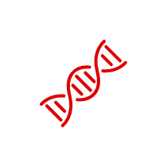
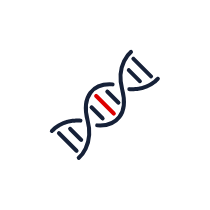

-
3B-EXOME
20,000여개 유전자의 exon 영역에서 병원성 변이를 찾는 검사입니다. 알려진 희귀 유전질환의 약 85%를 커버하는 가장 효율적인 검사입니다.
더 알아보기 -

3B-GENOME
20,000여개 유전자의 exon 뿐 아니라 exon 외 영역에 존재하는 모든 변이를 분석해 가장 적절한 병원성 변이를 밝혀냅니다. 사람의 유전체 영역 전체를 커버하는 가장 폭넓은 유전자검사입니다.
더 알아보기 -

3B-VARIANT
특정 변이 유무를 확인하는 검사입니다. 3B-EXOME 또는 3B-GENOME 검사로부터 발견된 병원성 변이를 재확인 하거나, 환자의 가족에게 해당 변이가 있는지 확인할 수 있습니다.
더 알아보기
-
01 담당 의료진이 검사를 의뢰합니다.
-
02 이 때, 샘플과 증상 정보를 쓰리빌리언에 함께 제출해야 해야합니다.
-
03 샘플로부터 추출한 DNA로부터 유전체 데이터를 생산합니다.
-
04 자체 변이 해석 시스템 EVIDENCE로 변이를 분석해 질환의 원인일 가능성이 높은 순서대로 나열합니다.
-
 05 임상유전학팀의 최종 검토 후 6주 이내에 결과지를 발송해드립니다.
05 임상유전학팀의 최종 검토 후 6주 이내에 결과지를 발송해드립니다. -
06 병원성으로 밝혀진 변이가 없다면, 해당 케이스는 자동 재분석 파이프라인을 통해 매일 재분석됩니다.
- ＊SNV : Single nucleotide variants
- ＊INDEL : Small insertion/deletions
- ＊CNV : Copy number variants
- ＊SV : Structural variants
쓰리빌리언의 유전자검사를
고려하고 계신가요?